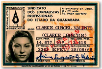
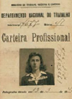
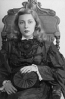

Curiosidades
Haia Pinkhasovna Lispector era o nome de batismo de Clarice Lispector, nascida na Ucrânia, na aldeia Tchetchelnik. Em 10 de dezembro de 1 920, seus pais resolveram migrar ao paÍs com ela ainda recém-nascida, onde se estabeleceram em Maceió.
Continue lendo para saber mais curiosidades!
Carteira de jornalista
Se consagrou como escritora, jornalista, contista e ensaísta, tornando-se uma das figuras mais influentes da Literatura brasileira.
Carteira de trabalho
Em 2 de março, ganhou seu primeiro registro profissional, trabalhando oficialmente como redatora sob salário de 600 mil réis.
Em 11 de janeiro de 1944, adotou o nome de casada na carteira de trabalho, Clarice Gurgel Valente.
Formatura
Em 1939, morando na rua Lúcio de Mendonça, no bairro do Maracanã, ela ingressou no curso superior na Faculdade de Direito da Universidade Federal do Rio de Janeiro
Em 1940, aos dezenove anos, seu interesse por Direito havia diminuído ao passo que aumentara sua atenção à Literatura, de modo que ela publicou, em 25 de maio, seu primeiro conto conhecido, Triunfo, na revista Pan.